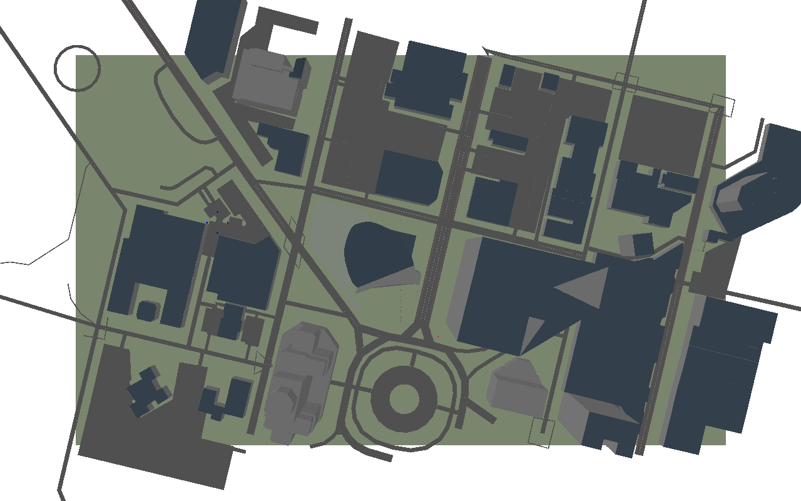

SHASTA Tutorial
Simulating Human-Swarm Teaming on Real City Maps
A hands-on introduction to the SHASTA simulator
Oklahoma State University
2026-09-29
What This Tutorial Covers
By the end, you’ll have run a real swarm mission and written your own SHASTA experiment.
Part 1 — Why SHASTA what it simulates, and why
↓
Part 2 — Install SHASTA from a clean checkout to your first mission
↓
Part 3 — Experience a mission no code — just the GUI
↓
Part 4 — Configure & extend the Python API, and your own experiment
Part One Why SHASTA what it simulates, and why OSM maps → pybullet world → swarms → a Gymnasium interface
Why SHASTA Install SHASTA Experience a Mission Configure & Extend
The Question
How should a human coordinate a team of autonomous vehicles they can’t fully see or predict?
That’s the human–swarm teaming question, and it shows up everywhere from disaster response to warehouse logistics to military reconnaissance. Answering it experimentally needs a testbed where three things are all changeable by the researcher, not fixed by the platform:
The World A real place, not an abstract grid — because how a human reads a street or a building matters to how they command a swarm in it.
The Swarm How many vehicles, what kind, how they’re organized — a formation of four drones is a different teaming problem than one of forty.
The Interface What the human sees and how they issue orders — a map click, a voice command, and a joystick each change what “teaming” means.
SHASTA is that testbed — and every one of those three is a config change, not a rewrite.
What Is SHASTA
Simulator for Human-Autonomy and Swarm Teaming Applications — a pybullet-based simulator for studying human–swarm interaction on real city maps built from OpenStreetMap.
Real Maps Any place on Earth you can draw a bounding box around becomes a simulator map — real streets, real buildings.
Two Vehicle Types UAVs (aerial, blue) and UGVs (ground, red) move in formation along the street network.
Three Ways to Command A human via the GUI, a scripted policy, or a reinforcement-learning agent — same Gymnasium interface underneath.
Real Physics Vehicles move through an actual pybullet physics simulation, not a grid-world abstraction — collisions, formation spacing, and 3D altitude are all real.
How It Fits Together
OPENSTREETMAPshasta fetch-osm
A bounding box (south, west, north, east) around any real place — a campus, a neighborhood, a city block.
becomes
OSM2WORLDshasta build-map
A custom tool turns the map into a 3D mesh and a street graph, fitting an affine transform so streets, buildings and vehicles all line up.
loads into
PYBULLET WORLD
The mesh loads directly — no Blender step needed. UAV and UGV groups spawn on it and move via physics constraints.
drives
GYMNASIUM ENV
env.step({group_id: target_node}) is the one call that drives everything above it, whether the caller is a human, a script, or an RL agent.
Every layer here is something a researcher can swap — a different city, a different vehicle mix, a different policy — without touching the layers above it.
One real place — buildings and streets pulled straight from OpenStreetMap. This is Buffalo, NY; the same pipeline works for any city.
The Teaming Loop
1Order
A human, a scripted policy, or an RL agent picks a group and a target node.
2Plan
PathPlanning finds a route for that group along the real street graph.
3Execute
Formation flies or drives the group along the route, one tick at a time.
4Observe
Positions, battery, ammo, and mission progress come back as the observation.
Every mission is one pass through this loop, over and over — and “Execute” is where a formation strategy, a communication delay, or a failure model gets injected.
Part Two Install SHASTA from a clean checkout to your first mission a clone, a venv, one pip install -e, two checkpoint commands
Why SHASTA Install SHASTA Experience a Mission Configure & Extend
Install SHASTA
Not on PyPI yet As of this tutorial, ihuman-shasta isn’t published to PyPI — pip install fails with “No matching distribution found.” Install from a clone instead (next slide). Check pip install ihuman-shasta again before your own session; this may already be fixed.
Install From a Clone
[gui] adds the human interface (shasta gui). Python 3.9 or newer.
Verified in this tutorial — a clean editable install from a fresh checkout completes with no errors, on Python 3.10, from an empty virtual environment.
Checkpoint: Verify the Install
shasta maps should print a list of city names: buffalo-small, buffalo-medium, chicago, new-york, san-jose, and more.
shasta demo should print, and end with “All groups reached their targets”:
Targets (map nodes): {0: 79, 1: 59}
step 0 centroids {0: [-350.6, -48.7], 1: [54.7, 82.4]}
...
step 1174 centroids {0: [-20.7, 147.6], 1: [123.9, 5.4]}
All groups reached their targets after 1174 steps.If you see both of those, the install is good — no 3D window needed yet.
Part Three Experience a Mission no code — just the GUI open it, pick a group, pick a target, send it
Why SHASTA Install SHASTA Experience a Mission Configure & Extend
Open the GUI
You should see a top-down map open, with your swarm groups on it (blue UAVs, red UGVs) and mission targets marked — no code needed for this part.

A real headless render of the same world the GUI shows — buildings and roads from the map mesh, with a UAV group (blue) and UGV group visible near the center-left.
The Controls
click or 1–9 Pick a group — click its marker, click its button, or press its number
click Pick a target — click near a street node; a white cross marks it
Enter Send the group — or the Send order button, or double-click the node
Space Pause / resume
- + Slow down / speed up
R Reset the view mouse wheel zooms, right-drag pans
V 3D camera view, follows the selected group
Send ALL groups and Cancel order are buttons in the side panel, not keys — for when you want everyone moving at once, or to call off an order mid-flight.
What the Side Panel Shows
While a mission is running
Mission progress — how many groups have reached their targets so far
The selected group’s battery, ammo, distance to target, and ETA
An event log — orders sent, targets reached, groups arrived
Options worth trying
--map — pick a different city (shasta maps lists them)
--uav-groups / --ugv-groups — change the swarm composition
--seed — reproduce the exact same mission again
Try it now: pick a group, click a target near a street, press Enter.
Part Four Configure & Extend the Python API, and your own experiment drive it headless, then subclass BaseExperiment
Why SHASTA Install SHASTA Experience a Mission Configure & Extend
Drive It From Python
No window needed — the same simulation, scripted:
from shasta.actors import UAV, UGV
from shasta.config import load_config
from shasta.env import ShastaEnv
from shasta.experiments import GoToNodeExperiment
config = load_config(headless=True)
config['experiment']['type'] = GoToNodeExperiment
groups = {0: [UAV() for _ in range(4)], # group 0: four drones
1: [UGV() for _ in range(3)]} # group 1: three ground vehicles
env = ShastaEnv(config, groups)
obs, info = env.reset()
obs, reward, terminated, truncated, info = env.step({0: 5, 1: 5})
while not terminated:
obs, reward, terminated, truncated, info = env.step(None)
env.close()Verified in this tutorial — this exact snippet runs end to end. obs[0].shape is (4, 3): four UAVs, an (x, y, z) position each.
Four Things That Will Trip You Up
All four below are things this tutorial hit directly while testing every command and snippet in it — not hypothetical.
The map lives one level deeper than you’d guess config['experiment']['map_to_use'] = "buffalo-medium" — not config['core']['map_name'], which doesn’t exist.
Actors can’t be reused across environments Build a fresh groups dict for every new ShastaEnv(...) — reusing the same UAV/UGV objects raises ValueError: Cannot load an actor multiple times.
A group with no path can crash mid-mission If one group finishes well before another, continuing to call env.step(None) can raise IndexError in GoToNodeExperiment.apply_actions (intermittent — seen once in three runs in this tutorial). Give every group a similar-length route until this is fixed upstream.
Mission.random’s count should match your group count Mission.random(map, 3, seed=0) against a two-group env leaves a target unassigned to any real group — mission.is_complete() then never returns True, even after every group you actually sent has arrived.
Build Your Own Experiment
Subclass shasta.base_experiment.BaseExperiment and implement four methods:
class FlyNorthExperiment(BaseExperiment):
def get_action_space(self): ... # a gymnasium.spaces object
def get_observation_space(self): ... # likewise
def apply_actions(self, actions, core): ... # move things
def get_observation(self, observation, core): ... # shape the obs
def get_done_status(self, observation, core): ... # when to stop
def compute_reward(self, observation, core): ... # optionalSee labs/custom_experiment.py for a complete, tested 70-line version — every actor in every group flies north for 300 steps, nothing more.
The Path from Here
labs/play.py — the mission from Part Two, with an EDIT ME block (map, group sizes, target)
labs/custom_experiment.py — the minimal BaseExperiment subclass
shasta/experiments.py — GoToNodeExperiment, the real one, ~40 lines
shasta/primitives.py — reusable behaviors: Formation, PathPlanning
Building a map of your own campus or study site: shasta fetch-osm + shasta build-map (needs Java; not exercised in this tutorial — see the main README.md).

Thanks!
Questions? See the SHASTA repository README.
your.name@okstate.edu

iHuman Lab · Oklahoma State University